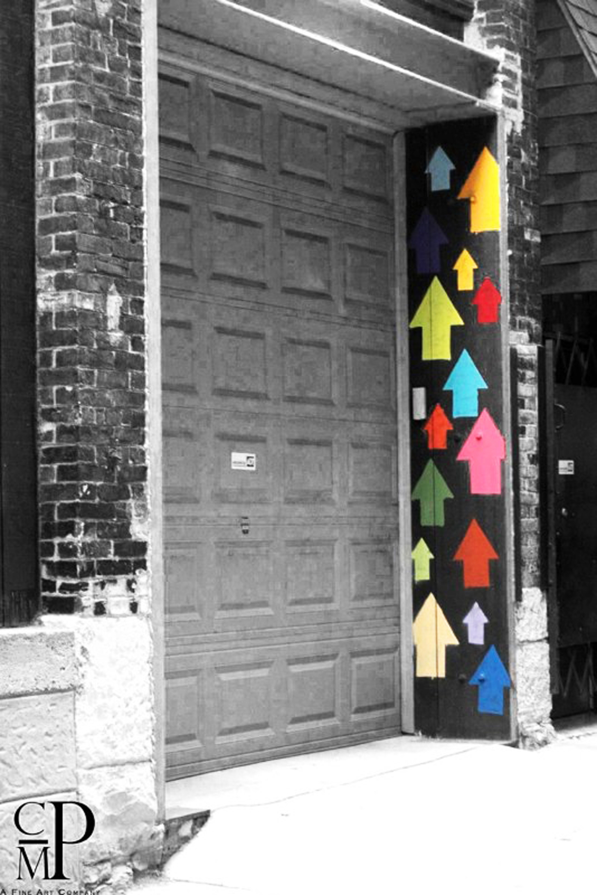
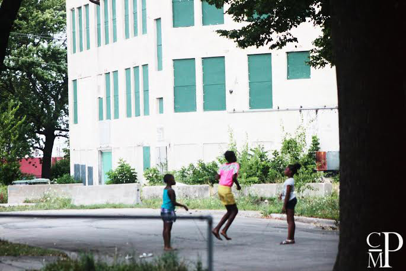
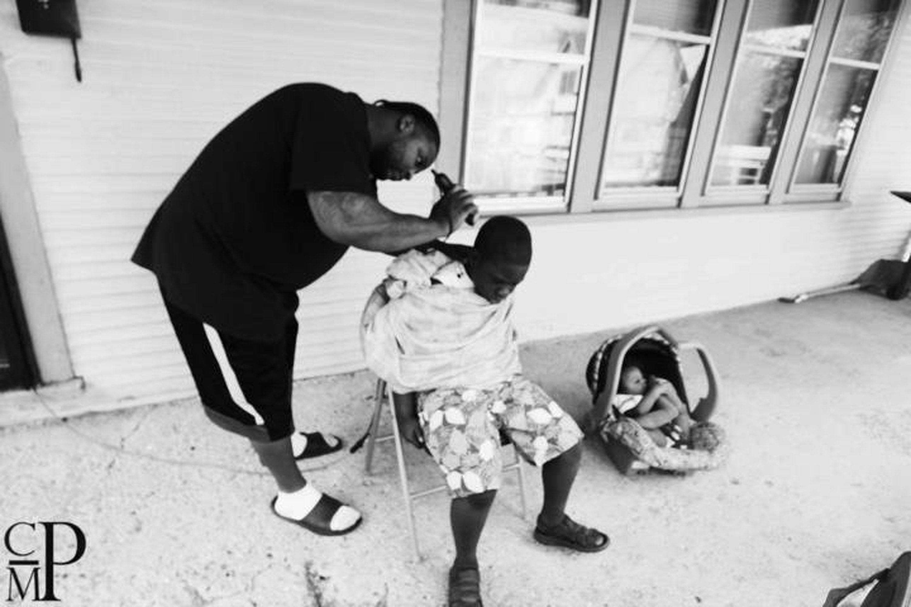
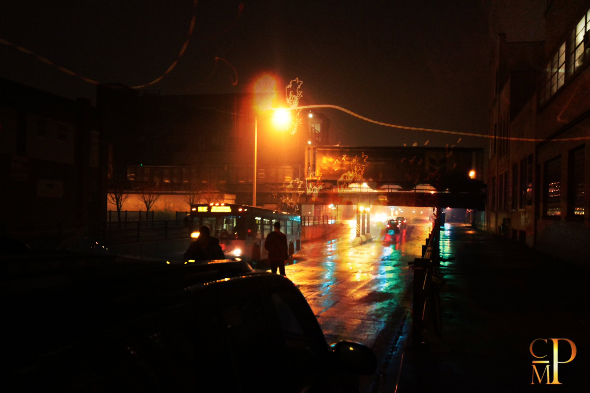
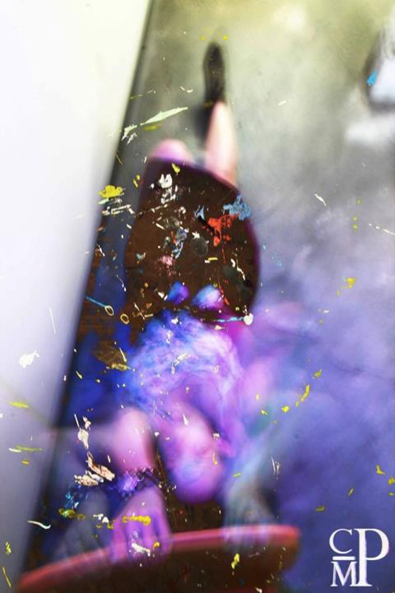

C.MPerceptions
Christopher McIntyre was the youngest artist to be included in the Wisconsin 30 exhibit to accompany the renowned 30 Americans exhibit at the Milwaukee Art Museum last year. But just because he’s young, doesn’t make him naive. He has seen a lot in these Milwaukee streets, and he has captured it with his camera. Because he didn’t want to end up another statistic, with his camera, his words, and his drive, McIntyre took his future into his own hands, and changed his perception. He even legally changed his name to Christopher McIntyre Perceptions in that regard.
His poetic images capture the culture of the city- the quiet normalcy, the dark nights and bright lights, and the constant hustle of it’s inhabitants. His “artlife” demeanor and photography brings a semblance of heart to the bleak streets, the vibrant souls that reside here, and to creatives standing beside their city, trying to find a way to follow their passions against all odds.
|  |  | |
| Higher Thought | Fly | |
This piece, cultivated in Milwaukee, deals |
Green is the color of life. In the hoods that I dwelled in and where I've congregated in, all you see is lifeless, motionless potential. But I also see duality, I call it the Whirlwind. High highs and low lows. Amidst all of this, I see innovation and hope in the eyes of children. They are the present and the future so all we can do is invest in living investments. And we must tell the children who feel like they can barely breathe that not only can you breathe...but you can fly little black boy...you can fly little black girl. You are the descendant of kings and queens, crafted by the hands of the Most High. Seek higher thoughts and focus on the light. And I promise...you will fly.
|
|
|  |  | |
| Hustle City | Dreams Alive | |
|
I am blessed to see energy so this is the closest I've ever gotten to showcasing to the world how I see. It also is a parable of going from the broad, dark path to the narrow path of love, light and life. Dreams must stay alive or else hope dies. This was cultivated in Milwaukee.
|
|
|  | ||
| Projectiles | Brush Up | |
Cultivated in Los Angeles, this piece speaks to me about innocence. From dodging balls to dodging bullets, life changes drastically. |
|
|
{kind=link}
For more from C.M.Perceptions:
http://www.cmperceptions.com
C.M.Perceptions on Facebook